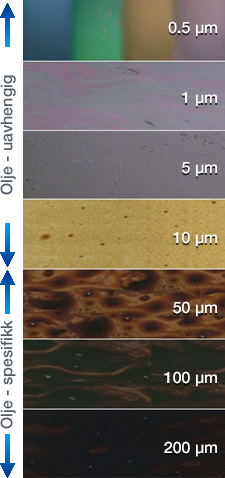

BAOAC
Skin/SheenTypisk utseende: Sølv/Grå
Mengde per km2 Variasjon (liter): 40 - 300
|
Regnbue/RainbowTypisk utseende: Rainbuefarger
Mengde per km2 Variasjon (liter): 300 - 5000
|
Metallisk/MetallicTypisk utseende: Blå, lilla, rød, grønnaktig
Mengde per km2 Variasjon (liter): 5000 - 50000
|
Avbrutt sann fargeTypisk utseende: Svart/brun
Mengde per km2 Variasjon (liter): 50000 - 200000
|
Uavbrutt sann fargeTypisk utseende: Mørk brun/svart
Mengde per km2 Variasjon (liter): >200000
Brun/Oransje (olje/vann emulsjon) |
